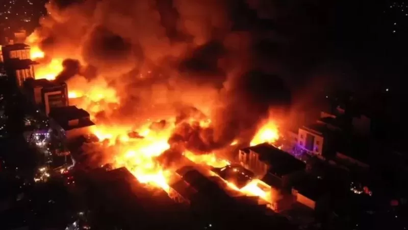

2 April 2022
Booqo dabka ka furmay suuqa 1aad Booqo howlaha gurmadka 2aad Booqo dadka ku hanti beelay 3aad
Dabka oo Ku Fiday Suuqa
Daawo Maayor Mooge OO ka Hadlaya Masiibadi dabka Hargaysa"Suuqa Waaheen ee magaalada Hargeysa uu dabku ka kacay in dabka degdeg loo xakameyn waayo waxaa qayb weyn ka qaatay waddooyinka ciriiriga ee suuqaasi, sida ay ganacsatada qaarkood BBC u sheegeen." sida waxa yidhi mayor Mooge
Qaar ka mid ah ganacsatada hantidooda ku gubatay dabka suuqa ka kacay waxay sheegeen suuqa markiisi horaba inuusan lahayn waddooyin ku filan oo ay gaadiidka dabdamisku si waafi ah u mari karaan. Waddooyinka qaarkoodna ay xireen ganacsatada yaryarka oo hareeraha waddada ku ganacsada.
Dhinaca kalana Suuqa Waaheen oo ahaa kan ugu weyn magaalada Hargeysa ayaan lahayn nidaam dab damis oo u sahlaya in dabka suuqa ka kaca si fudud loo damiyo.
Dukaannada iyo Bakhaarrada suuqaasi ka jiray intooda badan waxay ahaayeen kuwa dhinaca isku hayo oo marin ku filan aan laheen dadkuna ay u hoggaansamin digniinaha la xiriira waxyaabaha dabka baajin kara.
Ganacsatada qaarkood waxay BBc u sheegeen suuqa inuu ahaa mid ciriiri ah oo meel laga galo iyo meel laga baxa aan laheen maayarkana magaaladana uu ganasacatada u taag waayey .
"Soomaalida waxay tirahdaa balaayana ma sama, wax aragna ma xuma caawa wax la ogaaday, waayo dadka ayaa la kari waayey oo dhag jalaq u siin waayey digniinta had iyo jeer uu maayarka u soo jeedinayey" ayuu yiri Baasha Bushaara oo ah ganacsade uu dabkaasi ay uga gubatay 10 meheradood.
Qaar ka mid ah ganacsatada hantidooda ku gubatay dabka suuqa ka kacay waxay sheegeen suuqa markiisi horaba inuusan lahayn waddooyin ku filan oo ay gaadiidka dabdamisku si waafi ah u mari karaan. Waddooyinka qaarkoodna ay xireen ganacsatada yaryarka oo hareeraha waddada ku ganacsada.
Dhinaca kalana Suuqa Waaheen oo ahaa kan ugu weyn magaalada Hargeysa ayaan lahayn nidaam dab damis oo u sahlaya in dabka suuqa ka kaca si fudud loo damiyo.
Howlaha Gurmadka
Dabkii ka kacay suuqa ugu weyn Hargeysa ee Waaheen ayaa geystay qasaara baahsan inkasta oo qasaarahaasi si rasmi ah aan weli loo qiimeyn haddana baaxadda qasaaraha waxaa marag u ah muuqaalka argagaxa leh ee suuqa gubtay ka muuqda.
Suuqan oo bedka uu ku fadhiyo lagu qiyaaso ilaa shan kiiloomitir oo laba jibbaaran ayaa waxaa gabi ahaanba baab'iyey dabki ka kacay oo socday 20 saacadood waxaa ku gubatay 'hanti malaayiin doolar ah.'
Ciidamada dabdamiska, qaybaha kala duwan ee ciidamada iyo gurmad ka yimid dhinaca Dowlad Deegaanka Soomaalida ee dalka Itoobiya ayaa daminta dabka ka wada qayb qaatay.
Madaxweynaha Jamhuuriyadda Iskeed Madaxbannanida uga dhawaaqday ee Somaliland Muuse Biixi Cabdi oo goobta uu dabka ka kacay soo indha indheeyey wuxuu ku dhawaaqay in guddi arrintan loo saaray isaga oo shaaciyey hal malyan oo doolar oo ay guddigaasi ku sii howl galayaan.
"Guddi baa la magacaabay waxay galayaan gurmad xukumaddu waxay guddiga u soo deyneysaa hal malyan oo doolar oo ay guddidu ku howl gasho. Waxaanna aad iyo aad ugu mahadnaqayaa dhammaan dowladaha aan jaarka nahay oo isugu jira mid soo hadlay iyo mid soo gurmaday sida ay dhammaantood nooga soo tacsiyeeyeen madaxweynayaashaasi aad iyo aad baan ugu mahad naqeynaa. Waxaanna si gaar ah uga mahadnaqeynaa Killilka Shanaad oo waxay hayeen gaadiid dabdamis iyo xoog xalay soo diray oo daminta dabka nagala qayb qaatay," ayuu yiri madaxweyne Muusa Biixi.
Dabka suuqaasi ka kacay waxaa la sheegay iney ku dhaawacmeen 28 qof oo 9 ka mid dadkaasi ay soo gaareen dhaawacyo culus isbitaalladana lagu dabiibayo balse wax dhimasha ah ay jirin.
Dadka dabkaasi ku hanti beelay
Cabdiraxmaan Ibraahim oo kamid ah ganacsatada hantidooda ku burburtay dabka
"Halkan waxaan ku lahaa seddex mehereddood … hantida taallay marka la eego waxaa iiga burburay ilaa 70,000 oo doolar wey isku gaareysay. Suuqa waxaan ka baxay 8-ddii meelahaa 20 mirir anoon ka sii maqneen ayaa la igu yiri suuqi wuu gubanayaa waxaanna u imid isaga oo meheradahayga soo gaaray dabkina waa la qaban waayey," Cabdiraxmaan Ibraahim.
Masiibada dabka inkasta oo ay tahay mid xagga Alle ka timi haddana waxay aaminsan yihiin iney wadda la'aanta suuqa ka jirtay ay dhibaatadu sii hurisay.
"Markaa waxaa weeye waa aafo qaran waddooyinkaa xiranoo aanu dabdamiska soo mareyn kow bey ka ahaayeen dee wax uu ilaahey ugu talo glayna wey ahaayeen" ayuu yiri Cabduraxmaan Ibraahim oo ka mid ah ganacsatada ay hantida ka gubatay.
"Waxaan degganahay suuqa Waaheen Bacdlaha Hargeysa, muddo 20 sanadod ayaan degenaa 10 mehradood ayaa iiga gubtay, aniga mehradaheydu waxay ahaayeen qurxinta guryaha wixii oo dhan wey gubteen" ayuu yiri Baasho Bushaaro oo kamid ah ganacsatdii hantida uga gubtay dabka.
boqo baga 1